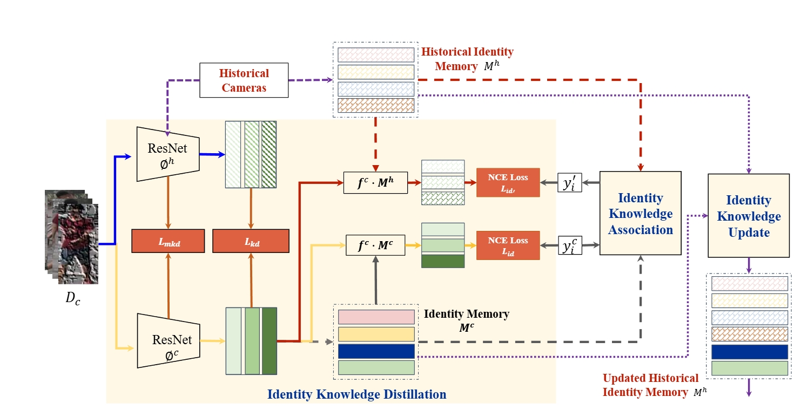
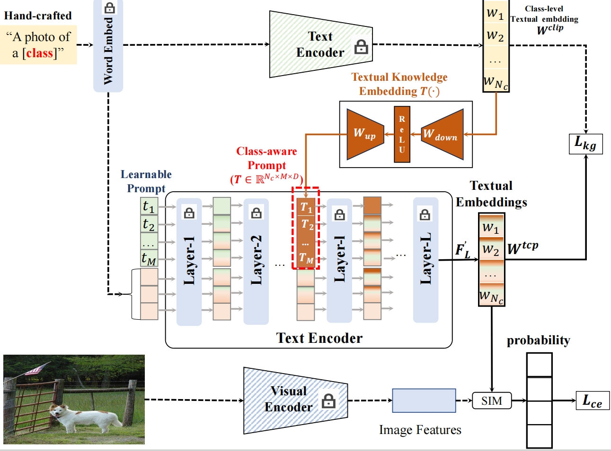
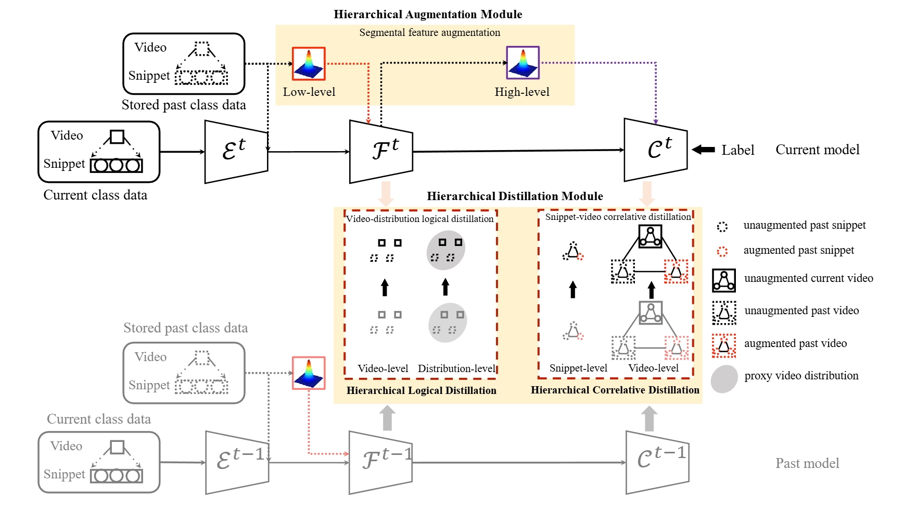
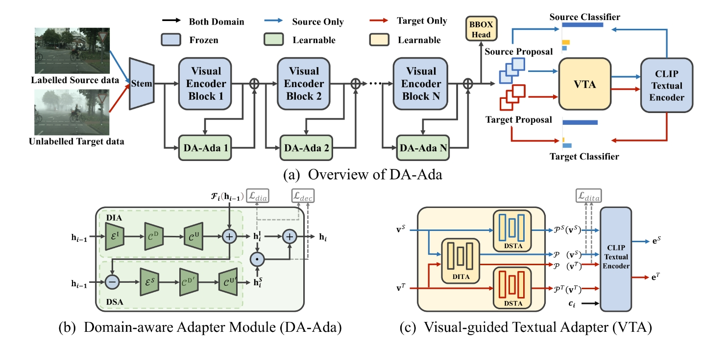
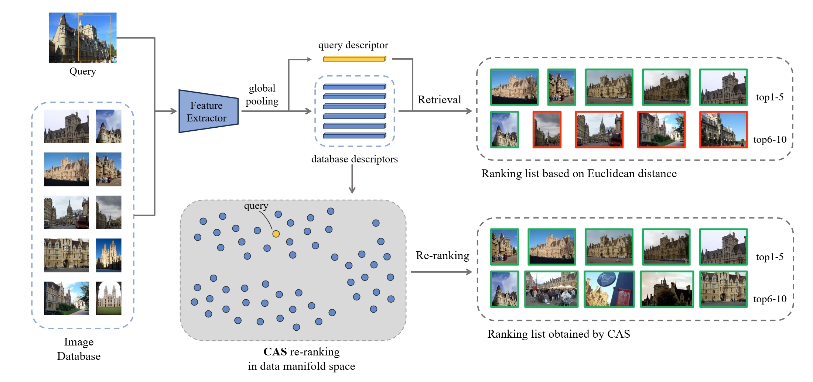

Hantao Yao
姚涵涛
About Me
received a B.E. degree from Xidian University in 2012 and received a Ph.D. degree from the Institute of Computing Technology, University of Chinese Academy of Sciences in 2018. After that, I worked as an assistant professor at the National Laboratory of Pattern Recognition, Institute of Automation, Chinese Academy of Sciences. Now, I am a professor at the University of Science and Technology of China
Research Interests
- Computer Vision: object recognition, person re-identification, object detection
- Machine Learning: domain adaptation, incremental learning, prompt tuning
Educations and Work
- 2008.9-2012.7 Xidian University(西安电子科技大学)，Bachelor degree
- 2012.9-2018.7 Institute of Computing Technology of the Chinese Academy of Sciences（中科院计算所)， Ph.D
- 2012.9-2025.2 Institute of Automation of the Chinese Academy of Sciences（中科院自动化所), Associate Professor
- 2025.2- University of Science and Technology of China, Professor
News
- 2025.3, two papers on Cross-domain Object Detection and Continual learning accepted by CVPR25.
- 2025.2, one papers on Domain Generalization accepted by TMM.
- 2024.11, one papers on Cross-domain Object Detection accepted by NeurIPS24.
- 2024.7, one papers on Camera-Incremental Person Re-Identification accepted by TMM.
- 2024.5, one papers on Cross-domain Object Detection accepted by TIP.
- 2024.5, two papers accepted by ICML24.
- 2024.4, one paper on Visual-Audio Class Incremental Learning accepted by TPAMI.
- 2024.3, one paper on Cross-domain Object Detection accepted by TIP.
- 2024.3, one paper on Prompt Tuning accepted by CVPR24.
Publications
-
 TMM 2024IEEE Transactions on Multimedia (TMM), 2024.
-
 CVPR 2024Proceedings of the IEEE/CVF Conference on Computer Vision and Pattern Recognition (CVPR), 2024.
-
 TPAMI 2024IEEE Transactions on Pattern Analysis and Machine Intelligence (TAPMI), 2024.
-
 NeurIPS 2024Advances in Neural Information Processing Systems (NeurIPS), 2024.
-
 ICML 2024International Conference on Machine Learning (ICML), 2024.
- Haihan Gao, Rui Zhang, Qi Yi, Hantao Yao, etal: Prompt-based Visual Alignment for Zero-shot Policy Transfer, accepted by ICML24 [Paper]
- Jifei Luo, Hantao Yao, Changsheng Xu: Cluster-Aware Similarity Diffusion for Instance Retrieval, accepted by ICML24 [Paper][Code]
- Yukun Zuo, Hantao Yao, Liansheng Zhuang, Changsheng Xu: Hierarchical Augmentation and Distillation for Class Incremental Audio-Visual Video Recognition, accepted by TPAMI. [Paper][Code]
- Hantao Yao, Rui Zhang, Changsheng Xu: TCP:Textual-based Class-aware Prompt tuning for Visual-Language Model, CVPR 24. [Paper] [Code]
- 姚涵涛 , 余璐, 徐常胜: 视觉语言模型引导的文本知识嵌入的小样本增量学习, 软件学报 23. [Paper]
- Hantao Yao, Rui Zhang, Changsheng Xu: Visual-Language Prompt Tuning With Knowledge-Guided Context Optimization, Proceedings of the IEEE/CVF Conference on Computer Vision and Pattern Recognition (CVPR), 2023, pp. 6757-6767. [Paper][Code]
- Sisi You, Yukun Zuo, Hantao Yao, Changsheng Xu:Incremental Audio-Visual Fusion for Person Recognition in Earthquake Scene. ACM Trans. Multim. Comput. Commun. Appl. 20(2): 53:1-53:19 (2024)
- Sisi You, Hantao Yao, Bing-Kun Bao, Changsheng Xu:Multi-object Tracking with Spatial-Temporal Tracklet Association. ACM Trans. Multim. Comput. Commun. Appl. 20(5): 129:1-129:21 (2024)
- Yifan Jiao, Hantao Yao, Changsheng Xu:Dual Instance-Consistent Network for Cross-Domain Object Detection. IEEE Trans. Pattern Anal. Mach. Intell. 45(6): 7338-7352 (2023)
- Yukun Zuo, Hantao Yao, Liansheng Zhuang, Changsheng Xu:Dual Structural Knowledge Interaction for Domain Adaptation. IEEE Trans. Multim. 25: 9057-9070 (2023)
- Sisi You, Hantao Yao Bing-Kun Bao, Changsheng Xu:UTM: A Unified Multiple Object Tracking Model with Identity-Aware Feature Enhancement. CVPR 2023: 21876-21886
- Haochen Li, Rui Zhang, Hantao Yao, Xinkai Song, Yifan Hao, Yongwei Zhao, Ling Li, Yunji Chen:Learning Domain-Aware Detection Head with Prompt Tuning. NeurIPS 2023
- Yukun Zuo, Hantao Yao, Liansheng Zhuang, Changsheng Xu:Margin-Based Adversarial Joint Alignment Domain Adaptation. IEEE Trans. Circuits Syst. Video Technol. 32(4): 2057-2067 (2022)
- Sisi You, Hantao Yao, Changsheng Xu:Multi-Object Tracking With Spatial-Temporal Topology-Based Detector. IEEE Trans. Circuits Syst. Video Technol. 32(5): 3023-3035 (2022)
- Yaoyu Li, Hantao Yao, Changsheng Xu:Intra-Domain Consistency Enhancement for Unsupervised Person Re-Identification. IEEE Trans. Multim. 24: 415-425 (2022)
- Yukun Zuo, Hantao Yao, Liansheng Zhuang, Changsheng Xu:Seek Common Ground While Reserving Differences: A Model-Agnostic Module for Noisy Domain Adaptation. IEEE Trans. Multim. 24: 1020-1030 (2022)
- Hantao Yao, Shaobo Min, Yongdong Zhang, Changsheng Xu:Attribute-Induced Bias Eliminating for Transductive Zero-Shot Learning. IEEE Trans. Multim. 24: 1933-1942 (2022)
- Hantao Yao, Changsheng Xu: Joint Person Objectness and Repulsion for Person Search. IEEE Trans. Image Process. 30: 685-696 (2021)
- Shaobo Min, Hongtao Xie, Hantao Yao*, Xuran Deng, Zheng-Jun Zha, Yongdong Zhang: Hierarchical Granularity Transfer Learning. NeurIPS 2020
- Yukun Zuo, Hantao Yao, Changsheng Xu: Category-Level Adversarial Self-Ensembling for Domain Adaptation. ICME 2020: 1-6
- Shaobo Min, Hantao Yao, Hongtao Xie, Chaoqun Wang, Zheng-Jun Zha, Yongdong Zhang: Domain-Aware Visual Bias Eliminating for Generalized Zero-Shot Learning. CVPR 2020: 12661-12670
- Yaoyu Li, Hantao Yao, Tianzhu Zhang, and Changsheng Xu. 2020. Part-based Structured Representation Learning for Person Re-identification. ACM Trans. Multimedia Comput. Commun. Appl. 16, 4, Article 134
- Sisi You, Hantao Yao, Changsheng Xu, "Multi-Target Multi-Camera Tracking with Optical-based Pose Association," in IEEE Transactions on Circuits and Systems for Video Technology, doi: 10.1109/TCSVT.2020.3036467.
- S. Min, Hantao Yao, H. Xie, Z. -J. Zha and Y. Zhang, "Domain-Oriented Semantic Embedding for Zero-Shot Learning," in IEEE Transactions on Multimedia, doi: 10.1109/TMM.2020.3033124.
- Y. Jiao, Hantao Yao and C. Xu, "PEN: Pose-Embedding Network for Pedestrian Detection," in IEEE Transactions on Circuits and Systems for Video Technology, doi: 10.1109/TCSVT.2020.3000223.
- Shaobo Min, Hantao Yao, Hongtao Xie, Zheng-Jun Zha, Yongdong Zhang: Multi-Objective Matrix Normalization for Fine-Grained Visual Recognition. IEEE Trans. Image Process. 29: 4996-5009 (2020)
- Shaobo Min, Hantao Yao, Hongtao Xie, Chaoqun Wang, Zheng-Jun Zha, Yongdong Zhang: Domain-Aware Visual Bias Eliminating for Generalized Zero-Shot Learning. CVPR 2020: 12661-12670
- Longhui Wei, Shiliang Zhang, Hantao Yao, Wen Gao, Qi Tian: GLAD: Global-Local-Alignment Descriptor for Scalable Person Re-Identification. IEEE Trans. Multim. 21(4): 986-999 (2019)
- Hantao Yao, Shiliang Zhang, Richang Hong, Yongdong Zhang, Changsheng Xu, Qi Tian: Deep Representation Learning With Part Loss for Person Re-Identification. IEEE Trans. Image Process. 28(6): 2860-2871 (2019)
- Hantao Yao, Feng Dai, Shiliang Zhang, Yongdong Zhang, Qi Tian, Changsheng Xu: DR2-Net: Deep Residual Reconstruction Network for image compressive sensing. Neurocomputing 359: 483-493 (2019)
- Shaobo Min, Hongtao Xie, Youliang Tian, Hantao Yao, Yongdong Zhang:Adaptive Bilinear Pooling for Fine-grained Representation Learning. MMAsia 2019: 2:1-2:6
- Hantao Yao, Shiliang Zhang, Chenggang Yan, Yongdong Zhang, Jintao Li, Qi Tian: AutoBD: Automated Bi-Level Description for Scalable Fine-Grained Visual Categorization. IEEE Trans. Image Process. 27(1): 10-23 (2018)
- Yaoyu Li, Hantao Yao, Lingyu Duan, Hanxing Yao, Changsheng Xu: Adaptive Feature Fusion via Graph Neural Network for Person Re-identification. ACM Multimedia 2019: 2115-2123
- Shaobo Min, Hantao Yao, Hongtao Xie, Zheng-Jun Zha, Yongdong Zhang: Domain-Specific Embedding Network for Zero-Shot Recognition. ACM Multimedia 2019: 2070-2078
- Hantao Yao, Shiliang Zhang, Yongdong Zhang, Jintao Li, Qi Tian: One-Shot Fine-Grained Instance Retrieval. ACM Multimedia 2017: 342-350
- Longhui Wei, Shiliang Zhang, Hantao Yao, Wen Gao, Qi Tian: GLAD: Global-Local-Alignment Descriptor for Pedestrian Retrieval. ACM Multimedia 2017: 420-428
- Hantao Yao, Shiliang Zhang, Dongming Zhang, Yongdong Zhang, Jintao Li, Yu Wang, Qi Tian: Large-scale person re-identification as retrieval. ICME 2017: 1440-1445
- Hantao Yao, Dongming Zhang, Jintao Li, Jianshe Zhou, Shiliang Zhang, Yongdong Zhang: DSP: Discriminative Spatial Part modeling for Fine-Grained Visual Categorization. Image Vis. Comput. 63: 24-37 (2017)
- Hantao Yao, Shiliang Zhang, Yongdong Zhang, Jintao Li, Qi Tian: Coarse-to-Fine Description for Fine-Grained Visual Categorization. IEEE Trans. Image Process. 25(10): 4858-4872 (2016)
- Hantao Yao, Shiliang Zhang, Fei Xie, Yongdong Zhang, Dongming Zhang, Yu Su, Qi Tian: Orientational Spatial Part Modeling for Fine-Grained Visual Categorization. IEEE MS 2015: 360-367
Awards
- ACM Multimedia Asia 2019, Best Student Paper Award
- China Multimedia 2023, Best Poster Award
- Postdoctoral Innovative Talent Support Program, 2018
- Chinese Academy of Sciences President's Excellence Award
Services
Conference Reviewers
Journal Reviewers
Powered by Jekyll and Minimal Light theme.